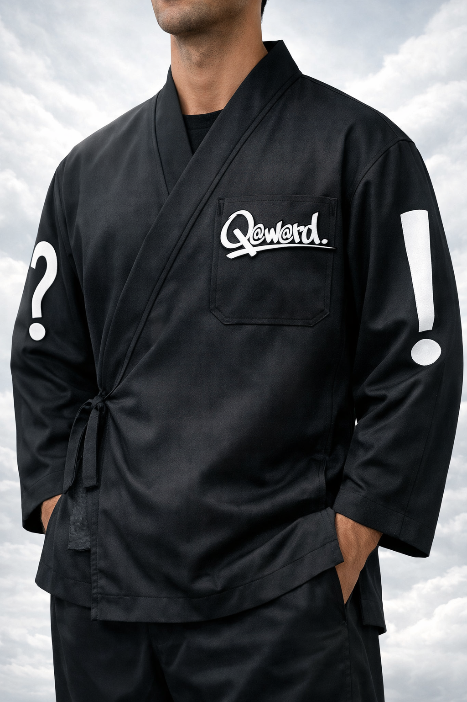
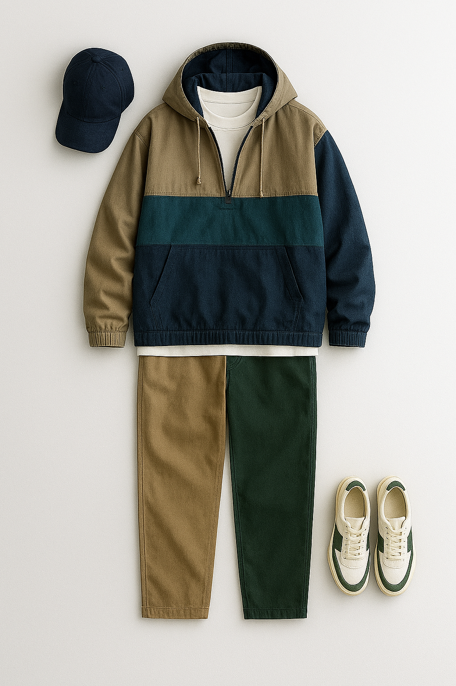
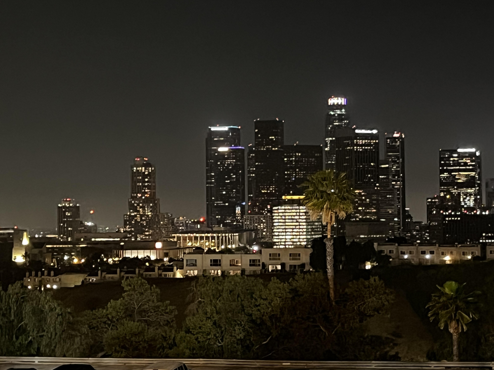
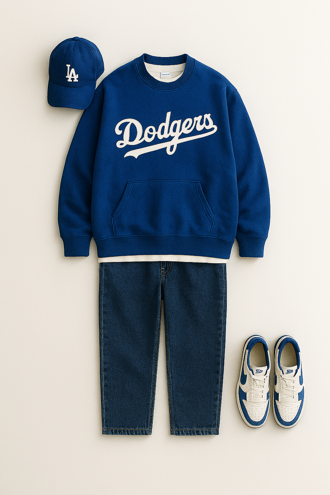
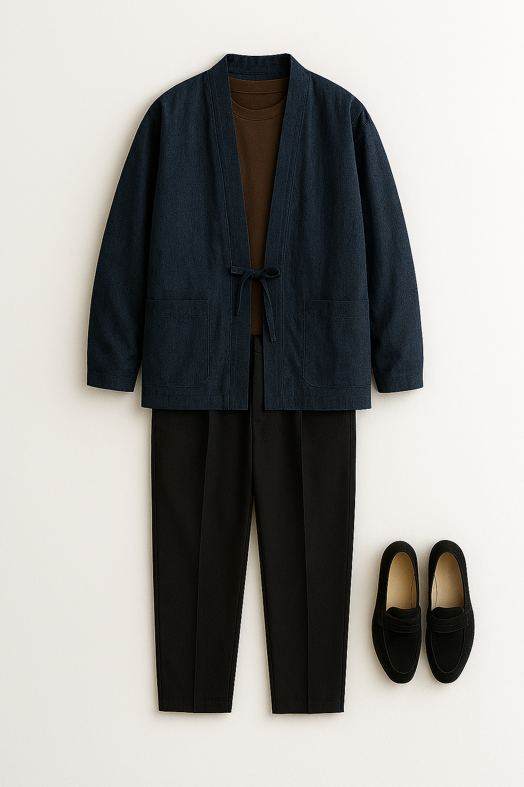

archive 001
THE SAMUE JACKET
The first garment in the Q@w@rd archive — a blend of tradition and glitch-era aesthetics. Monastic silhouette, cyber-noir intent.
Minimal. Monastic. Cyber-noir. A blend of tradition and glitch-era aesthetics — the first garments in the Q@w@rd archive.




